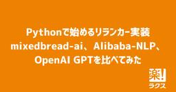

RAKUS Developers Blog | ラクス エンジニアブログ
https://tech-blog.rakus.co.jp/
株式会社ラクスのITエンジニアによる技術ブログです。
フィード

Pythonで始めるリランカー実装：mixedbread-ai、Alibaba-NLP、OpenAI GPTを比べてみた 27
27
RAKUS Developers Blog | ラクス エンジニアブログ
mixedbread-ai/ Alibaba-NLP / OpenAI GPTによるリランキング【実装サンプル付き】 はじめに RAGをはじめとする現代の情報検索システムでは、「リランカー（Reranker）」と呼ばれる仕組みが使われることがあります。 検索候補を単にキーワードマッチやベクトル検索でピックアップするだけでなく、さらに高精度なモデル(＝リランカー)で再スコアリング（再ランキング）することで、ユーザーが本当に求めている情報を上位に表示できます。 本記事では、筆者が実際に業務中の検証作業で利用した次の3つのモデル: mixedbread-ai/mxbai-rerank-v2 Alib…
1日前

AI開発の最前線！「RAKUS AI Meetup」開催レポート～3つの事例から見えたラクスの本気度～
RAKUS Developers Blog | ラクス エンジニアブログ
先日、株式会社ラクス主催の技術イベント「RAKUS AI Meetup」がオンラインで開催されました。本イベントは、ラクスのAI技術への取り組みや活用事例を社外の方々にも広く知っていただくことを目的としており、当日は多くの方にご視聴いただきました！！ 「楽楽精算」「メールディーラー」といった主力サービスへのAI機能組み込みの裏側から、開発本部全体でのAIツール活用による生産性向上まで、3つの具体的なセッションを通して、ラクスのAI開発のリアルが語られました。 本記事では、各セッションの模様をダイジェストでお届けします！ （記事執筆は当イベントの司会も担当しました、技術広報の川東がお届けいたしま…
8日前
AIで加速するオフショア開発の新次元：チームトポロジー実践の先に見えた「真の協働」とは
RAKUS Developers Blog | ラクス エンジニアブログ
はじめに：1年後の私たち――進化の軌跡と、ささやかな告白 第1章：グローバル開発モデルの進化――オフショア開発とAIの幸福な出会い 1.1 旧来の認識 vs 現代の現実：オフショア開発の再定義 1.2 中核となるアナロジー：優れたオフショア開発プラクティスは、優れたAIプラクティスである 1.3 AIによる認知負荷の軽減とスキルの平準化：言葉の壁を越える力 1.4 代替不可能な「ヒューマン・イン・ザ・ループ」：AIの限界と人間の価値 第2章：絵に描いた餅で終わらせない――現場起点のAI活用、その道のり 2.1 「なぜやるのか？」から始めるデータ駆動アプローチ 2.2 活用のための足場作りと血の…
12日前
バズより本質を届けたい ——ラクス開発組織がたどり着いた情報発信のすべて
RAKUS Developers Blog | ラクス エンジニアブログ
開発組織の価値観は、社内にあるだけでは届きません。 定義や行動指針を掲げても、それだけで伝わるわけではない。 むしろ、「なぜ、行動したのか？」「どう意思決定しているのか？」という現場の声こそが、その組織の“らしさ”を表すものだと思います。 私たちラクスは、創業以来大切にしてきた「顧客志向」の価値観を、外部に伝える活動に本格的に取り組んでいます。 本記事では、ラクスの開発組織がどのように情報発信と向き合い、今のかたちにたどり着いたのか。その背景にある試行錯誤や、ブログ、イベント開催、カンファレンス登壇などの取り組みをご紹介します。 フェーズ①当初の狙いは“認知拡大” フェーズ②「顧客志向」を軸に…
15日前
「何を言っているか」より「誰が言っているか」──AI時代に必要な“信頼の設計”
RAKUS Developers Blog | ラクス エンジニアブログ
自己紹介 こんにちは、稲垣です。ラクスの開発組織のプロダクト部 製品管理課の組織のマネージャーをしています。 └ プロダクト部の紹介はコチラ / 製品管理課の紹介はコチラ / 私自身の経歴はコチラ こんな方におすすめ ・自身の提案が上司や必要な人に届いてないと感じてる方 ・AI時代でも廃れない価値を獲得したい方 ・プロダクトマネージャーとして人としての巻き込み力をあげたい方 目次 はじめに AI時代の「言っていること」は差別化できない PdMの武器は「信頼」 どうしたら「信頼」を得ることができるのか？ 「信頼」があるとどうなるか？ 最後に
16日前
ラクス大阪開発組織で活躍！SIer/SES経験を活かすキャリアパス
RAKUS Developers Blog | ラクス エンジニアブログ
複雑な要件をまとめ、曖昧な仕様を詰め、品質と納期を両立させてプロジェクトをやり切る─。 SIerやSESでの仕事は、常に高い要求と責任の中で鍛えられる挑戦の連続です。 そんな日々の中でも、 「もっと顧客に貢献している実感が欲しい」 「自分たちの手でプロダクトを育てたい」 と感じたことはありませんか？ ラクス大阪開発組織では、まさにそんな思いを胸に、SIer/SESから新しいキャリアを選んだエンジニアが数多く活躍しています。 ラクスの大阪開発組織は、複数の主力プロダクトを担当しながら、「顧客志向のSaaS開発組織」としてさらに発展を続けています。 今回はそこに所属する人々の概要のほか、エンジニア…
17日前
ラクス大阪開発組織のいま ～ 組織で価値を共有し続ける取り組み ～
RAKUS Developers Blog | ラクス エンジニアブログ
こんにちは。ラクスの大阪開発組織で統括責任者をしております、矢成です。 私たちラクスは、「ITサービスで企業の成長を継続的に支援します」というミッションのもと、BtoB SaaSを通じてお客様の業務課題を解決しています。 開発本部でも「顧客をカスタマーサクセスに導く圧倒的に使いやすいSaaSを創り提供する」というミッションを掲げ、「顧客志向」を徹底したプロダクトづくりに取り組んできました。 この開発組織の原点は、実は大阪にあります。 ラクスは大阪で創業し、最初のプロダクト開発も大阪からスタートしました。 現在においても、大阪開発組織は複数の主力サービスを担当しながら、創業時から大切にしてきた「…
23日前
UIを変えたら、プロダクトもチームも、動き出した
RAKUS Developers Blog | ラクス エンジニアブログ
こんにちは、デザインマネージャーの青柳です。 あらゆるプロダクトにとって、最良のUXを目指すことは必然だと思います。 私たちもまた、お客様により快適な体験を提供するため、継続的なUX改善に取り組んでいます。 今回ご紹介するのは勤怠管理システム「楽楽勤怠」のUI/UX改善プロジェクト。 シリーズを一貫する体験設計と、顧客満足につながる独自性の両立を目指して、プロダクトの体験を一歩進める取り組みに挑みました。 今回はプロジェクトの背景・工夫・成果だけでなく、デザイン組織が実現したい未来像や、そこに挑むデザイナーたちの姿についてもお話しできればと思います。 目指すのは「一貫した体験の提供」と「使いや…
1ヶ月前
PHP 8.5の新機能「パイプ演算子」
RAKUS Developers Blog | ラクス エンジニアブログ
こんにちは、配配メール開発チームのid:takaramです。 毎年11月ごろに新しいメジャーバージョンがリリースされるPHPですが、今年2025年11月（予定）にリリースのPHP 8.5に新機能「パイプ演算子」が導入されることが決まりました🎉 リリースはまだ先ですが、8.5の目玉となるであろうこの機能を一足早く紹介していきます！ ⚠️この記事の内容は、2025年6月現在開発中の仕様に基づいています。PHP 8.5リリースまでに変更になる可能性がありますのでご了承ください。 パイプ演算子の基本 パイプ演算子の活用法を考えてみる 高階関数を利用した活用例 今後の展望（Future scope） ま…
1ヶ月前
AIの業務活用とかけまして、コミュニケーションととく。その心は？
RAKUS Developers Blog | ラクス エンジニアブログ
自己紹介 ラクスでPdMをしております。@keeeey_mと申します。 現在の担当商材は、楽楽シリーズ(楽楽精算、楽楽明細、楽楽電子保存)を担当しており、個人としては楽楽精算×AIの担当、 楽楽明細・楽楽電子保存PdMチームのリーダーをしております。 きっかけ：毎日のテキストコミュニケーションでの葛藤 日々、業務でチャットツールを使い社内の人とテキストコミュニケーションをすることがほとんどです。ちょっとした雑談からタスクのやり取りまで、様々な情報が飛び交います。あれほど毎日テキストコミュニケーションをしていても、はっきり伝えようとすると直接すぎ、配慮して丁寧に説明しようとすると長い文面になり形…
1ヶ月前
累計18,000社の声とデータで、価値あるAIプロダクトへ ～ラクス「AIエージェント専門組織」の挑戦～
RAKUS Developers Blog | ラクス エンジニアブログ
こんにちは、AIエージェント開発課 課長の石田です。 「ITサービスで企業の成長を継続的に支援します」 これが私たちラクスのミッションです。 私たちはBtoB SaaSの提供を通じて、企業の成長につながる業務効率化や生産性向上に向き合ってきました。 そのために、開発生産性向上はもちろんのこと、顧客の体験価値向上や顧客の業務効率化を目的とした機能開発にも組織を挙げて取り組んでいます。 その最も新しい取り組みが、2025年5月に設立した専門組織「AIエージェント開発課」です。 www.rakus.co.jp AIエージェントはユーザーの指示がなくとも自律的に目的を理解し、最適なタスクを実行すること…
1ヶ月前
プロダクトマネージャーが感じる孤独は「悪」なのか？
RAKUS Developers Blog | ラクス エンジニアブログ
自己紹介 ラクスでPdMをしております。@keeeey_mと申します。 現在の担当商材は、楽楽シリーズ(楽楽精算、楽楽明細、楽楽電子保存)を担当しており、個人としては楽楽精算×AIの担当、 楽楽明細・楽楽電子保存PdMチームのリーダーをしております。 こんな方におすすめ プロダクトマネージャーとして孤独感を感じている方 プロダクトマネージャーをマネジメントする立場の方 プロダクトマネージャーを目指している方 組織開発やチームマネジメントに携わる方 目次 はじめに：PdMの孤独という普遍的な課題 PdMが感じる孤独の本質 孤独と向き合う：個人としてのアプローチ 組織として何ができるか まとめ：孤…
1ヶ月前
Ducklake(PostgresqlでカタログDB構築): Postgresql + s3(Minio) + DuckDBで構築するLakehouse
RAKUS Developers Blog | ラクス エンジニアブログ
はじめに こんにちは！ エンジニア３年目のTKDSです！ 今回はメタデータ管理をPostgresqlやMySQLなどのSQLデータベースが担う新しいOSSのLakehouseフォーマット、Ducklakeについて試してみました！ 今回はPostgresql+s3(minio)+DuckDBで構築してます。 はじめに Ducklakeの概要 準備 1. composeでPostgresqlとminioを起動 2. minioでバケットを作成する 3. DuckDB側の準備と起動 試す まとめ
1ヶ月前
個の限界が教えてくれたマネジメントへの道：葛藤を超えて形作る自分だけのキャリア
RAKUS Developers Blog | ラクス エンジニアブログ
自己紹介 ラクスでPdMをしております。@keeeey_mと申します。 現在の担当商材は、楽楽シリーズ(楽楽精算、楽楽明細、楽楽電子保存)を担当しており、個人としては楽楽精算×AIの担当、 楽楽明細・楽楽電子保存PdMチームのリーダーをしております。 きっかけは交流セッションのオファー 先日、アシスタントマネージャー（AM）へのステップアップを目指す女性社員向けの社内研修で話をする機会をいただきました。東京拠点で研修を受けている17名に向けて、マネジメント職として経験してきたことをざっくばらんに話してほしいとのこと。開発部門でマネジメント職として働く私の話が、彼女たちに新たな視点や気づきを与え…
1ヶ月前
「ナレッジはあるのに、活かせていない」を変える！NotebookLMで顧客対応を改善する検索Botをつくった話
RAKUS Developers Blog | ラクス エンジニアブログ
はじめに こんにちは。楽楽販売開発課のkananpaです。 今回は、私が所属しているサポート対応チームにて、NotebookLMを使ってナレッジ検索用の問い合わせBotを作成した取り組みについてご紹介します。 「ナレッジはたくさんあるけど、活かしきれていない…」 そんな課題を解消すべく、AIツールを導入してどのようにナレッジを整理・活用したか、その作成過程と課題を素直にまとめました。 はじめに ナレッジは溜まっているのに、活用できていない現状 NotebookLMでナレッジ検索用Botを構築 NotebookLMを選んだ理由 データの準備とインポート 異なるデータ形式をどう扱ったか 実際の変換…
1ヶ月前
AI時代のプロダクトマネージャー：組織と人材の変化から見る新しい価値創造
RAKUS Developers Blog | ラクス エンジニアブログ
自己紹介 ラクスでPdMをしております。@keeeey_mと申します。 現在の担当商材は、楽楽シリーズ(楽楽精算、楽楽明細、楽楽電子保存)を担当しており、個人としては楽楽精算×AIの担当、 楽楽明細・楽楽電子保存PdMチームのリーダーをしております。 はじめに：AI時代におけるPdMの役割変化 先日、AI×PdM vol.1 〜AI時代のプロダクト開発・社内業務改革の最前線〜というイベントに参加する機会がありました。このイベントでは、AI技術の急速な発展により、プロダクトマネージャー（PdM）の役割がどのように変化しているかについて、多くの示唆に富む議論が交わされました。 本記事では、イベント…
1ヶ月前
『EM×PMフィッシュボウル #2 〜組織と価値創造 編〜』参加してみた
RAKUS Developers Blog | ラクス エンジニアブログ
こんにちは、稲垣です。 2025年度からはイベント参加や登壇だけでなく RAKUS Developers Blog | ラクス エンジニアブログやRakus Designers Rakus Designers にも積極的に投稿して行こうかなと思っています。 Xでもプロダクトマネージャーのこと、デザイナーのこと、マネジメント全般なことをポストしていますのでよろしくお願いします。 今回の内容は6/2(月)に開催し参加したこちらについてです。 product-people-united.connpass.com 第一回目は「ゲスト」と参加しましたが、今回は完全な視聴者と参加しました。 tech-bl…
2ヶ月前
「顧客志向のSaaS開発組織」であり続けるための5つの現場事例
RAKUS Developers Blog | ラクス エンジニアブログ
ラクスが「顧客志向」を大切にしつづける理由 事業が成長し、組織が大きくなるにつれ、エンジニアと顧客の距離は遠くなりがちです。 「リリースした機能が、実際どう使われているのかわからない」 「この仕様、本当に最適なのだろうか？」 そんなモヤモヤを持っている方もいるかもしれません。 私たちラクスは創業当初から徹底的に顧客の声を聴き、プロダクトを磨きこんできました。 2017年からは開発組織として「顧客をカスタマーサクセスに導く、圧倒的に使いやすいSaaSを創り提供する」というミッションを掲げ「顧客志向」での開発に取り組み続けています。 その結果、多くの顧客にプロダクトが支持され、国内SaaS市場でA…
2ヶ月前
DX化とAI業務利用の共通点～ワークフロー変革こそが生産性向上の鍵～
RAKUS Developers Blog | ラクス エンジニアブログ
自己紹介 ラクスでPdMをしております。@keeeey_mと申します。 現在の担当商材は、楽楽シリーズ(楽楽精算、楽楽明細、楽楽電子保存)を担当しており、個人としては楽楽精算×AIの担当、 楽楽明細・楽楽電子保存PdMチームのリーダーをしております。 この記事を書いたきっかけ プロダクトマネージャーとして日々業務に携わる中で、ChatGPTやCopilot、CursorなどのAIツールを積極的に活用してきました。 個人レベルでの生産性向上は確実に実感していたものの、ある日ふと気づいたことがありました。 「人を動かすことの方が圧倒的に時間と労力を要する」という現実です。 この気づきを上司に話をし…
2ヶ月前
どうやってデザインを社内へ浸透させるか
RAKUS Developers Blog | ラクス エンジニアブログ
こんにちは、稲垣です。 先日、「読書シェア」に参加しましたので、書籍の紹介とともに表題の件について書いてみようと思います。 yumemi.connpass.com 自己紹介 書籍紹介 最後に
2ヶ月前
AtlasとArgoCDでDBマイグレーションの仕組みを構築してみた
RAKUS Developers Blog | ラクス エンジニアブログ
はじめに こんにちは！ラクスでSREをしているモリモト（2025/3に中途入社）です。 業務の中で、AtlasとArgoCDを使ってGoアプリケーションのDBマイグレーションの仕組みを新規に構築したので、その方法を書き残してみたいと思います。 はじめに 構築したフロー 実現したかったこと 1. 宣言的なスキーマファイルを管理できる 2. 宣言的なスキーマファイルからマイグレーションファイルを生成でき、それをバージョン管理できる 3. 検証環境や本番環境に対して、自動でDBマイグレーションを実行できる アーキテクチャ検討 Atlasの導入とスキーマ管理の仕組み スキーマの定義 atlasの設定フ…
2ヶ月前
ブーメラン転職ってどうなの？実体験から語る
RAKUS Developers Blog | ラクス エンジニアブログ
1年前に離れた会社に、また戻ることを選びました。 PdMとして、どう考え、どう決断したのか。そのリアルな記録です。 目次 ブーメラン転職ってどうなの？実体験から語る 自己紹介 転職したときは「もう戻らないつもり」だった（けど、少しだけ迷いもあった） 新しい環境での1年は、想像よりずっと早く過ぎた ふと「もう一度、あのチームで働くのもアリかも」と思った瞬間 戻る決断に迷いはあった。でも、それ以上に理由があった 同じ会社、同じ役割。だけど、見え方は全然違っていた この3年間を経て、自分なりにわかった「働く場所の選び方」
2ヶ月前
顧客志向なプロダクトマネジメントとは？要件定義から開発まで「本当に必要な機能」を見極める方法
RAKUS Developers Blog | ラクス エンジニアブログ
はじめに 楽楽勤怠開発部でPdM（プロダクトマネージャー）をしている @k0First です。 私は、ラクスが提供する「楽楽勤怠」のプロダクトマネージャー（PdM）として、日々企画・要件定義・開発推進を担当しています。 ラクスは「ITサービスで企業の成長を継続的に支援します」をミッションに掲げ、SaaSプロダクトを通じて企業の業務効率化・生産性向上に貢献する会社です。 私たちラクスが大切にしているのは、「顧客視点で価値を生む機能開発」。 ですが実際の現場では、さまざまなリクエストや要望が飛び交い、目の前の「作るべきもの」に引っ張られてしまうこともあります。 たとえば、 事業部からの要望をそのま…
2ヶ月前
キャリアは偶発？計画？：IT企業6社を経た足跡
RAKUS Developers Blog | ラクス エンジニアブログ
どうも、稲垣です。 先日、株式会社翔泳社 ProductZine編集部主催のイベントに参加しました。 昨年に続き、今年も神田明神ホールで開催されました。 当日は晴天で、神田明神では『神田神社大祭』が催されており、活気にあふれていました。 神田明神いつきても素敵だ去年もここだったが良き今日は神田明神でもイベントやってる #productzine pic.twitter.com/UWy89oT5tv— 稲垣 剛之(Takeshi Inagaki)｜ラクス (@ingktks7) 2025年5月15日 その中で以下のクロージングセッションが 【モデレーター】広瀬 丈［ログラス］/飯沼 亜紀［ウト］/…
2ヶ月前
pg_query_goではじめるSQL解析
RAKUS Developers Blog | ラクス エンジニアブログ
はじめに こんにちは、エンジニア３年目のTKDSです！ 今回はpg_query_goについて調べてみました。 業務で使用したこともあるのですが、改めて個人的に使ってみたいと思い、使い方をさくっと調べて試しました。 はじめに pg_query_goとは 簡単なサンプル 事前準備 中身をチラ見 実用例：SQLの操作を抽出 実用例：SQL実行種別のガードレール まとめ
2ヶ月前
PdM像は十人十色──「我々は何者か」
RAKUS Developers Blog | ラクス エンジニアブログ
どうも、稲垣です。 先日、PM、PdM向けイベントを0からみんなで作る会に参加しました 参加のきっかけは、これまでとは少し違った雰囲気のイベントだったこと。それくらいの軽い気持ちでしたが、参加してみると、たくさんの気づきがありました。 せっかくなので、ブログにまとめてみようと思います。 思ったことを、感じたままに綴ります。読んでくださる皆さんにとって、何かしらの学びや気づきになれば嬉しいです。 前置きが長いですが是非！（イベントの内容については、ブログの後半でレポート） プロダクトマネージャーの解像度のあげ方 そもそもプロダクトマネージャーって何者？ 「我々は何者か？」を明らかにすること ラク…
2ヶ月前
『速読会』に参加してみた
RAKUS Developers Blog | ラクス エンジニアブログ
こんにちは、稲垣です。 2025年度からはイベント参加や登壇だけでなく RAKUS Developers Blog | ラクス エンジニアブログやRakus Designers Rakus Designers にも積極的に投稿して行こうかなと思っています。 Xでもプロダクトマネージャーのこと、デザイナーのこと、マネジメント全般なことをポストしていますのでよろしくお願いします。 前回は「フィッシュボウル」参加について書きましたが、今回はその翌週に参加した「速読会」について書きます。 この会ですが、今PdMの中では話題になっています。参加した方々の声がブログにノートであがっています ●ログラスさん…
2ヶ月前
『PMフィッシュボウル 〜組織デザインってむずくない？編〜』参加してみた
RAKUS Developers Blog | ラクス エンジニアブログ
こんにちは、稲垣です。 2025年度からはイベント参加や登壇だけでなく RAKUS Developers Blog | ラクス エンジニアブログやRakus Designers note にも積極的に投稿して行こうかなと思っています。 Xでもプロダクトマネージャーのこと、デザイナーのこと、マネジメント全般なことをポストしていますのでよろしくお願いします。 今回の内容は4/23(水)に「ゲスト」で参加したこちらについてです。 ※PMフィッシュボウル 〜組織デザインってむずくない？編〜 非常に学びと良い経験ができたイベントだったので、書いておきます。 また、今後「フィッシュボウル形式」でのイベント…
3ヶ月前
開発生産性計測について見直して開発速度向上を狙っている話
RAKUS Developers Blog | ラクス エンジニアブログ
こんにちは。 株式会社ラクスで先行技術検証をしたり、ビジネス部門向けに技術情報を提供する取り組みを行っている「技術推進課」という部署に所属している鈴木（@moomooya）です。 ラクスでは社内独自指標での開発生産性指標の計測を行ってきましたが、今年度からFindy Team+を開発本部全体に導入しFour Keysをベースとした計測1に切り替えてきました。 今回はFindy Team+導入に関する記事を書こうと思います。 導入と経緯 課題 経緯 ファインディ社との関わり 開発生産性カンファレンス 指標のハックについてはひとまず考えない Findy Team+ 検討、仮決定 内製でやるのは結構…
3ヶ月前
mcp-goで作って学ぶMCPサーバー
RAKUS Developers Blog | ラクス エンジニアブログ
はじめに こんにちは、エンジニア３年目のTKDSです！ 最近MCPが盛り上がってます。 流れに乗ってGoでやる方法を調べて試してみました！ まず簡単に現在時刻を返すMCPサーバーを作ったあと、割と実用的に使えそうなファイルを連結して返すMCPサーバーを作っていきます。 今回書いたコードのリポジトリです。 https://github.com/tkeshun/mcp はじめに MCPとは？ 今回使用するライブラリ 現在時刻を返すMCPサーバー 1. プロジェクトの準備 2.コード作成 3. パッケージのダウンロードとビルド 4. 試す 特定のディレクトリ以下のファイルを返すMCPサーバー まとめ
3ヶ月前